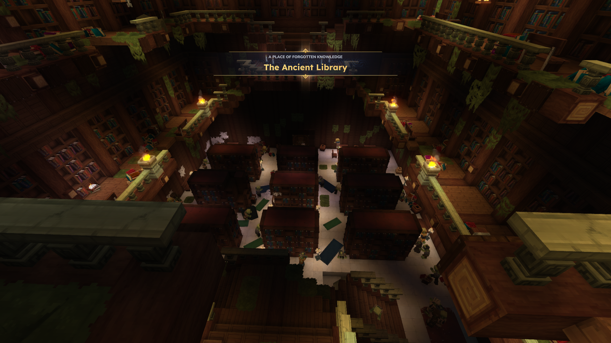
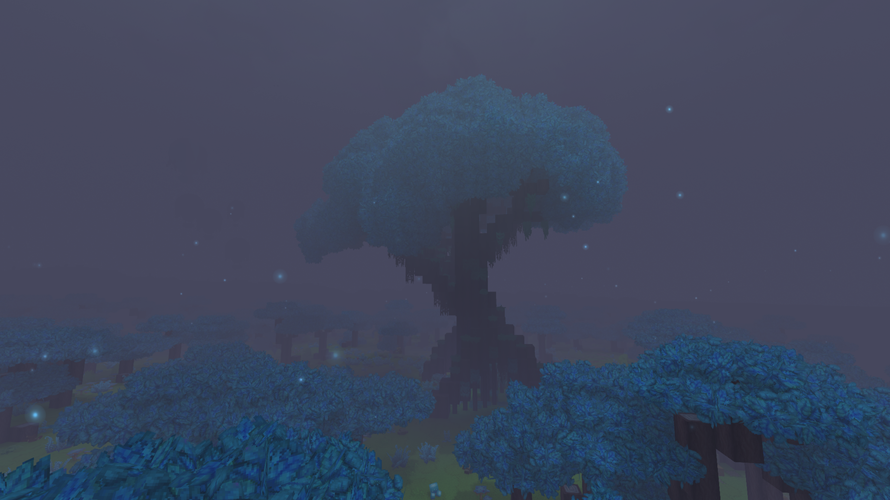
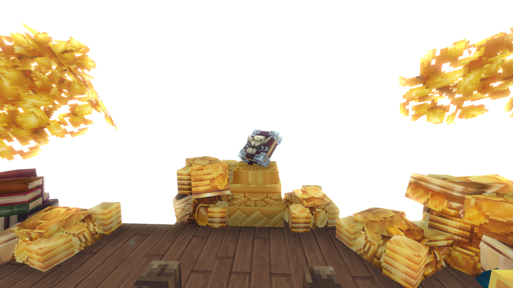
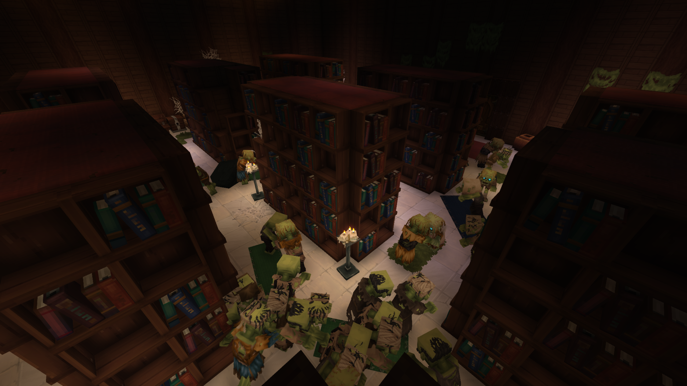
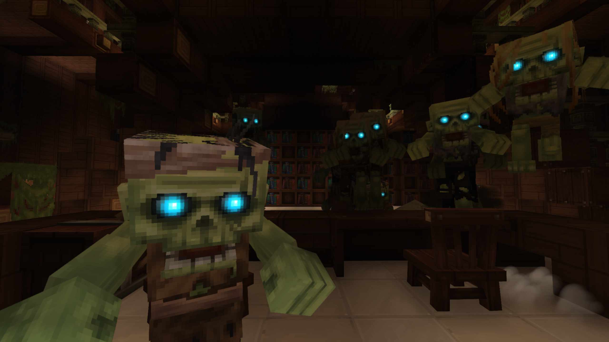

Buried deep beneath the glowing, twilight canopy of the Blue Forest lies the Ancient Library—a subterranean sanctuary of lost knowledge that has transformed into a claustrophobic, zombie-infested death trap.
Ancient Library

| Location Information | |
|---|---|
| Coordinates | X: 617, Z: 787 |
| Area Type | Rural Ruins |
| Mob Threat | Very High |
| Bandit Threat | High |
| Number of Chests | 19 |
| Water Source | Yes |
| Clean Water Source | No |
| Fireplace | No |
| Chef's Stove | No |
| Workbench | No |
| Available Loot | ||
|---|---|---|
| 🍎 Food | ✗ | |
| 🥛 Civilian | Tier 1 | ✗ | |
| ✂️ Civilian | Tier 2 | ✗ | |
| 🛠️ Civilian | Tier 3 | 4 | |
| 🛡️ Military | Tier 1 | ✗ | |
| ⚔️ Military | Tier 2 | 4 | |
| 🏹 Military | Tier 3 | 11 | |
| 🌟 Legendary | ✗ | |
Lore
Buried deep beneath the glowing, twilight canopy of the Blue Forest lies the Ancient Library—a subterranean sanctuary of lost knowledge that has transformed into a claustrophobic, zombie-infested death trap.
The Hidden Atrium
To find this repository of forgotten lore, travelers must first track down a single, impossibly giant tree that dominates the heart of the misty Blue Forest. Hidden intricately beneath its massive, gnarled root system is the entrance to the library. The upper balconies and stone overlook levels remain relatively quiet; the ancient wooden railings, lit by flickering torches, see only rare, wandering undead. For a brief moment, stepping into the grand, multi-tiered archive feels peaceful, offering a false sense of security to curious explorers.
The Sprawling Horde
The illusion of safety shatters entirely the moment one looks down over the edge. On the lower floors, the library is absolutely sprawling with a dense, restless sea of zombies. Drawn into the deep foundations by a relentless hunger, glowing-eyed horrors crowd the narrow aisles, clawing at desks and mindlessly pacing the floors. There are simply too many to kill. Engaging the horde in conventional, face-to-face combat is a death sentence, forcing survivors to entirely rethink how they navigate the environment.
Anatomy of the Archive
- The Great Root Entrance, concealed directly beneath the colossal central tree of the Blue Forest.
- The Upper Tiers, featuring winding staircases and stone balconies where the undead are thin and shadows offer hiding spots.
- The Bookshelf Canopy, a network of towering, massive oak bookshelves that stretch all the way to the floor below, serving as a makeshift highway.
- The Lower floor, an absolute warzone crammed with a suffocating, dense horde of aggressive zombies.
The Acrobatics of Survival
Because navigating the floor is impossible, clever survivors have turned the library's immense architecture to their advantage. To safely explore the lower floor and search for hidden chests, adventurers must rely heavily on parkour—carefully leaping from the top of one massive bookshelf to the next. By staying high above the grasping hands of the crowd, you can map out the layout, locate rare spellbooks, and bypass the thickest parts of the horde.
Present Day
For high-level players, the Ancient Library is a premier test of stealth, agility, and spatial awareness. If your foot slips or a jump falls short, you will fall directly into a relentless, trapped pit of glowing blue eyes. When entering the lower chambers, you have two choices to survive: be exceptionally sneaky, sticking to the shadows and the tops of the shelves, or prepare to run for your absolute life the second your boots hit the floor.
Step carefully across the high shelves of the Ancient Library. The knowledge of the ancients is well worth the climb, but a single misplaced step will drop you straight into the open jaws of a waiting army.
Gallery



